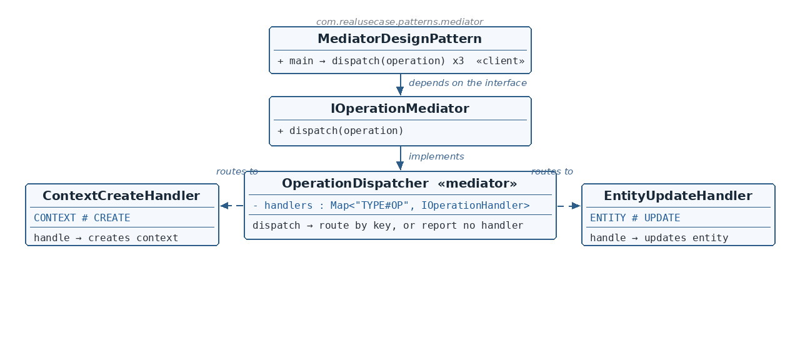

The contracts
☕ 4 min read · 🎬 Video walkthrough · 📊 UML diagram · 💻 Runnable code
⚡ In a nutshell — Define an object that centralizes how a set of objects interact.
Define an object that centralizes how a set of objects interact. Colleagues never reference each other — they know only the mediator — so coupling collapses from many-to-many to many-to-one, and interaction rules live in exactly one place.
Event-driven platforms receive operations — create a CONTEXT, update an ENTITY, delete a COHORT — that must reach the right specialized handler. If every producer knew every handler, adding one handler would ripple everywhere. The production fix is a dispatcher: handlers self-describe what they handle (artifactType + operation), the dispatcher indexes them by that key, and every operation flows through one dispatch() — with unknown combinations handled gracefully. This is the routing heart of real operation-consumer services.
IOperationMediator is the Mediator contract: one method, dispatch(operation) — what the client depends on.IOperationHandler is the Colleague contract: handlers self-describe (artifactType(), operation()) and act (handle).OperationDispatcher is the concrete mediator: at construction it indexes handlers into a map keyed "TYPE#OP"; dispatch looks up and routes — or reports no handler without crashing.
Reading the diagram: the client depends only on the mediator interface. The dispatcher routes to self-described handlers (dashed arrows). No arrow connects one handler to another — that absence is the pattern.
IOperationMediator — Mediator contract — dispatch(operation).OperationDispatcher — Concrete mediator — indexes and routes by TYPE#OP key.IOperationHandler — Colleague contract — self-describing handlers.ContextCreateHandler / EntityUpdateHandler — Concrete colleagues.Operation — The message being routed (artifactType + operation).MediatorDesignPattern — Client — dispatches three operations, one with no handler.public interface IOperationMediator {
void dispatch(Operation operation);
}
public interface IOperationHandler {
String artifactType();
String operation();
void handle(Operation operation);
}
artifactType + operation) separately from how (handle). This is what lets the mediator index them automatically — no central registration table to maintain by hand.Operation.java — the messageprivate final String artifactType;
private final String operation;
OperationDispatcher.java — the concrete mediatorpublic class OperationDispatcher implements IOperationMediator {
private final Map<String, IOperationHandler> handlers;
public OperationDispatcher(List<? extends IOperationHandler> handlerList) {
this.handlers = handlerList.stream().collect(Collectors
.toMap(handler -> key(handler.artifactType(), handler.operation()), Function.identity(), (a, b) -> b));
}
private static String key(String artifactType, String operation) {
return artifactType + "#" + operation;
}
@Override
public void dispatch(Operation operation) {
IOperationHandler handler = handlers.get(key(operation.getArtifactType(), operation.getOperation()));
if (handler == null) {
System.out.println("no handler for " + key(operation.getArtifactType(), operation.getOperation()));
return;
}
handler.handle(operation);
}
}
CONTEXT#CREATE, ENTITY#UPDATE. The (a, b) -> b merge function resolves duplicate keys (last one wins) instead of throwing.dispatch is the single interaction point: compute the key, look up, route. The null branch handles unknown combinations gracefully — a routing miss is reported, not a crash.public class ContextCreateHandler implements IOperationHandler {
@Override public String artifactType() { return "CONTEXT"; }
@Override public String operation() { return "CREATE"; }
@Override public void handle(Operation operation) { System.out.println("creating context"); }
}
IOperationMediator dispatcher = new OperationDispatcher(
Arrays.asList(new ContextCreateHandler(), new EntityUpdateHandler()));
dispatcher.dispatch(new Operation("CONTEXT", "CREATE"));
dispatcher.dispatch(new Operation("ENTITY", "UPDATE"));
dispatcher.dispatch(new Operation("COHORT", "DELETE"));
COHORT#DELETE) has no handler and demonstrates the graceful miss.$ java -cp target/classes com.realusecase.patterns.MediatorDesignPattern
creating context
updating entity
no handler for COHORT#DELETE
DispatcherServlet routing requests to controllers.Colleagues know the mediator; the mediator knows the rules — nobody knows each other.
👏 Found this useful? Give it a few claps so more developers discover it, and follow for the whole series — every article ships with a UML diagram, runnable code, a narrated video, and a companion PDF. Happy building! 🚀